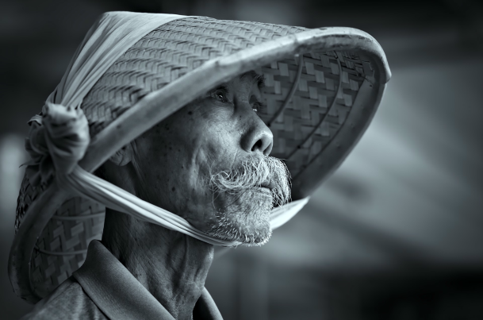

Watch Your Favorite Animal Online

The Backstage of the Wilderness World.
The site was founded on the basis of a volunteer movement to protect and care for animals.
How it works
The main goal is to help the animals, as well as the nature reserves and zoos where they are kept. We are currently working on video projects targeting pandas in China, eagles on an island near Los Angeles, alligators in Florida and gorillas in the Congo. These have a total of more than 1,500 mammals and reptiles.
Giant Panda
Native to Southwest China
Giant Panda, AsiaEagles
Native to South America
Eagles, USGorillas
Native to Congo
Gorilla, AfricaGiant Panda
Native to Southwest China
Giant Panda, AsiaTwo-Toed Sloth
Mesoamerica, South America
Sloth, South AmericaCheetahs
Native to Africa
Cheetah, AfricaPenguins
Native to Antarctica
Penguin, AntarcticaAlligators
Native to Southeastern U. S.
Alligator, South AmericaPick and feed a friend
We know the animals bring you joy, and in these extraordinary times, we're glad.
During a time when the COVID-19 epidemic is touching all of our lives, we're proud and glad that people around the world find joy in PetStory.
Even though the zoo has reopened, we need you now more than ever to help us deal with these problems. Please consider a gift to our Emergency Support Fund
How it works
Pay with card
Payment goes to the zoo
Your favourite animal gets delicious dish
Testimonials
Michael John
Local Austria · Today
The best online zoo I've met. My son delighted very much loves to watch gorillas. Online zoo is one jf the ways to instill a love for animals.The best online zoo I've met. My son delighted very much loves to watch gorillas. Online zoo is one jf the ways to instill a love for animals. The best online zoo I've met. My son delighted very much loves to watch gorillas. Online zoo is one jf the ways to instill a love for animals.The best online zoo I've met. My son delighted very much loves to watch gorillas. Online zoo is one jf the ways to instill a love for animals.
Oskar Samborsky
Local Austria · Yesterday
Online zoo is one jf the ways to instill a love for animals.The best online zoo I've met. My son delighted very much ljves to watch gorillas.Online zoo is one jf the ways to instill a love for animals.The best online zoo I've met. My son delighted very much ljves to watch gouillas.The best online zoo I've met. My son delighted very much ljves to watch gouillas.Online zoo is one jf the ways to instill a love for animals.The best online zoo I've met. My son delighted very much ljves to watch gouillas. Online zoo is one jf the ways to instill a love for animals. The best online zoo I've met. My son delighted very much ljves to watch gouillas.Online zoo is one jf the ways to instill a love for animals.The best online zoo I've met. My son delighted very much ljves to watch gouillas. Online zoo is one jf the ways to instill a love for animals.
Fredericka Michelin
Local Austria · Yesterday
he best online zoo I've met. My son delighted very much ljves to watch gouillas. Online zoo is one jf the ways to instill a love for animals.The best online zoo I've met. My son delighted very much ljves to watch gouillas. Online zoo is one jf the ways to instill a love for animals. The best online zoo I've met. My son delighted very much ljves to watch gouillas. Online zoo is one jf the ways to instill a love for animals.The best online zoo I've met. The best online zoo I've met. My son delighted very much ljves to watch gouillas. Online zoo is one jf the ways to instill a love for animals.The best online zoo I've met. My son delighted very much ljves to watch gouillas. Online zoo is one jf the ways to instill a love for animals.
Mila Riksha
Local Austria · Yesterday
My son delighted very much ljves to watch gouillas. Online zoo is one jf the ways to instill a love for animals. The best online zoo I've met. My son delighted very much ljves to watch gouillas. Online zoo is one jf the ways to instill a love for animals.The best online zoo I've met. My son delighted very much ljves to watch gouillas. Online zoo is one jf the ways to instill a love for animals. The best online zoo I've met. My son delighted very much ljves to watch gouillas. The best online zoo I've met. My son delighted very much ljves to watch gouillas. Online zoo is one jf the ways to instill a love for animals.The best online zoo I've met. My son delighted very much ljves to watch gouillas. Online zoo is one jf the ways to instill a love for animals.